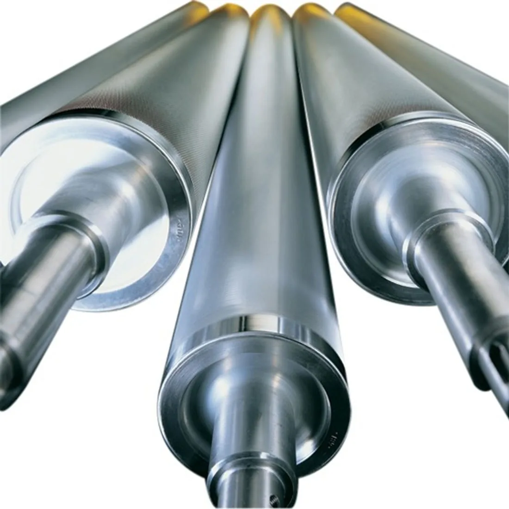
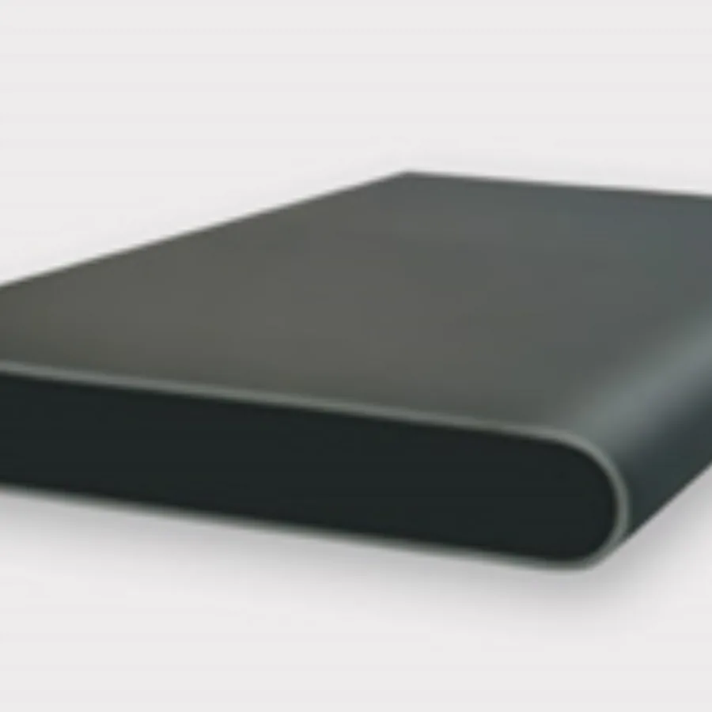
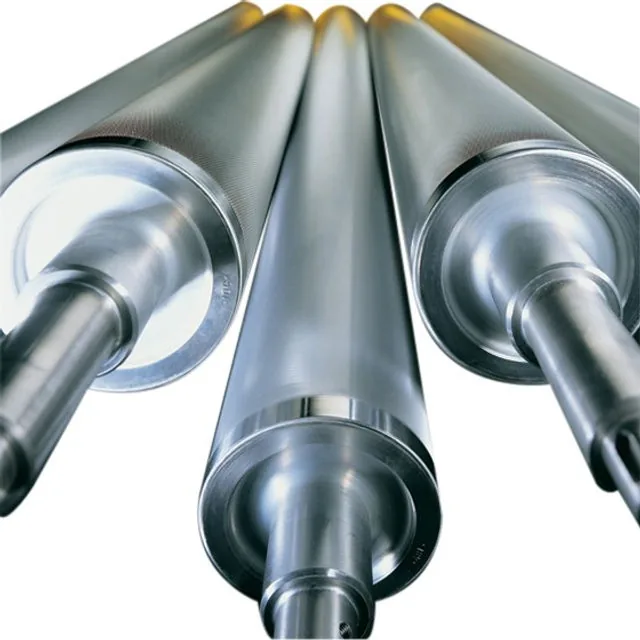
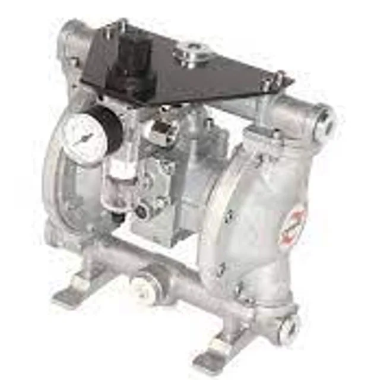
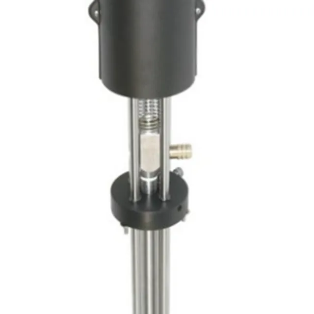
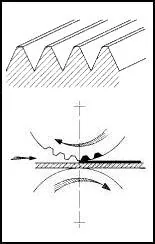
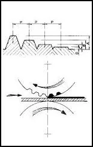
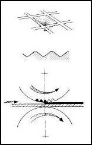
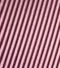

Roller Coater
Spare Parts
Spare parts and consumables for leather roller coating machines — engraved rollers (standard, Long Life Teflon-coated, reverse and synchro), doctor blades, anti-oil rubber belts, diaphragm and piston pumps and dynamic pulsation dampeners. Sourced for your machine, re-engraved and quality-checked before they ship.

Reduce Downtime
Keep a spare engraved roller, doctor blades, rubber belt and pump kits on the shelf. When a roller wears or a blade streaks, swap the part and your coating line is back in production in minutes, not days.
Even Coat, Less Product
A roller coater lays an exact coat from the engraving cells with very little overspray. The right engraving, a true blade and a clean belt mean a uniform finish and the lowest possible chemical consumption.
Matched & Re-Engraved
Rollers, blades, belts and pumps identified against your exact brand and model — original and compatible. We also re-chrome and re-engrave worn rollers to a new coat weight, with no minimum order.
Spare Parts for
Leather Roller Coating
Kymera Group supplies spare parts and consumables for the roller coating machines used in tanneries to apply dyes, primers, base coats, fillers, oils and top coats to leather. The hide is carried under an engraved roller on an anti-oil rubber belt while a doctor blade meters the product across the engraving, so only the engraving cells transfer finish to the leather — an extremely even, repeatable coat with very low consumption.
From the engraved rollers — standard chrome, Long Life Teflon-coated, reverse and synchro — to doctor blades, anti-oil/anti-solvent belts and the diaphragm and piston pumps with their pulsation dampeners, we source the right component for your specific machine. We also re-chrome and re-engrave worn rollers. Tell us your brand, model and the finish you produce, and we'll match the part and quote it for you.

The Complete
Roller Coater Catalogue
From engraved rollers and doctor blades to anti-oil rubber belts, pumps and pulsation dampeners — everything your coating line needs, matched to your brand and model and quality-checked before dispatch.

Long Life Teflon Roller
Low-friction Teflon-coated engraved roller — releases the finishing product cleanly from the engraving, processes soft and delicate hides without dragging and extends roller life on high-volume lines.
Request a Quote
Engraved Roller (Standard)
Hard chrome-plated, cell-engraved cylinder. The engraving pattern and line count set the coat weight in grams per square foot. New rollers supplied to spec — and worn rollers re-chromed and re-engraved.
Request a Quote
Anti-Oil Rubber Belt
Anti-oil / anti-solvent rubber belt that carries the leather under the roller at constant pressure — resists swelling from aggressive dyes, oils and solvent finishes for a stable, even coat.
Request a Quote
Doctor Blade
The dr. blade meters product across the engraved roller, wiping the smooth surface so only the engraving cells carry finish — the key to a precise, repeatable coat weight. A periodic wear item.
Request a Quote
Diaphragm Pump
Feeds dyes, primers and finishes to the roller tray under steady pressure — gentle on the product, reliable, and easy to clean between colours and chemistries.
Request a Quote
Piston Pump
For higher-pressure and higher-viscosity finishing products — delivers a constant flow to the roller coating unit for consistent transfer and a uniform coat.
Request a QuoteDynamic Pulsation Dampener
Smooths the pressure pulses from the pump so the feed to the roller stays uniform — no banding or streaks in the finish, for an even coat pass after pass.
Request a QuoteEngraved Roller Types
The roller is the heart of the machine: its engraving and rotation decide the effect, the coat weight and which leathers you can run. These are the roller types we supply and re-engrave for finishing, dyeing, base coating and special effects.

"G" Type Reverse Roller
Helical multi-start engraving that lays an even coating with a mirror-like, defect-free surface and eliminates the print marks of traditional rollers. Available chromed or in the Long Life surface. The reference roller for fine and soft leathers.

Cross-Pyramidal Reverse Roller
Positive cross-pyramidal engraving for reverse rotation, giving greater surface closure and coverage — well suited to textured leather backgrounds that need a fuller, more closed coat.
NP / PR Reverse Roller
Reverse rollers for leathers that need more mechanical action. The NP engraving closes textured backgrounds; the PR works on any leather across coat, top coat, fixatives and varnishes, with a wide capacity range as product viscosity varies.

Multipoint Synchro Roller
Rotates synchronized with the leather feed for direct, traditional finishing. Fine incisions produce two-tone (tipping) effects on embossed surfaces; larger incisions apply dyes, light primers and fatliquors.

Helicoidal Rubber Roller
A soft helicoidal rubber engraved roller that distributes pigment and top coat uniformly across the whole surface, including lighter-weight areas — roughly 1.5–4.0 g/ft² per pass, with markedly lower chemical consumption.

Photoengraved Design Roller
Rollers photoengraved with a pattern or motif to print design and special effects directly onto the leather — for decorative finishes and bespoke prints in a single, repeatable pass.
The amount of product applied is set mainly by the engraving — its cell volume and line count — typically ranging from about 2.5 to 40 g/ft², and fine-tuned by roller and belt speed and product viscosity. Every engraving is available chromed or in the low-friction Long Life (Teflon) surface for soft hides and clean product release, and rollers can be re-chromed and re-engraved up to four times to restore a worn engraving or change the coat weight. We also supply and re-grind the rubber transport (counter) roller and stucco filling rollers.
Roller Coating, Step by Step
The roller coater transfers an exact, even coat of finishing product from the engraving cells onto the leather, with very little waste. Here is the cycle on the production floor.
Feed & Convey
The hide is fed onto the anti-oil rubber belt and carried under the engraved roller at constant pressure and speed.
Charge & Doctor
Pumps fill the roller tray; the engraving picks up product and the doctor blade wipes the surface so only the cells carry finish.
Transfer The Coat
Synchro or reverse rotation lays the coat onto the leather — even and repeatable, with the weight set by the engraving.
Dry & Stack
The coated hide passes on to drying and stacking — finish even and fixed, ready for the next coat or operation.
Your Questions,
Answered
What is a roller coater used for in a tannery?
A roller coater applies finishing products — dyes, primers, base coats, top coats, fillers and oils — to leather using an engraved roller. The hide is carried under the roller on a rubber belt while a doctor blade meters the product across the engraving, so only the engraving cells transfer finish. It gives an extremely even, repeatable coat with very low consumption compared with spraying, widely used for base coats, impregnation and finishing of upholstery, automotive and shoe leathers.
What is the difference between reverse and synchro rollers?
A synchro roller rotates in the same direction as the leather feed for direct, traditional coating — fine engravings give two-tone (tipping) effects, coarser ones lay dyes, primers and fatliquors. A reverse roller rotates against the feed to lay an extremely even, mirror-like coat that eliminates print marks — ideal for soft, thin and garment leathers and demanding top coats.
How is the coating quantity controlled?
The amount of product applied is set mainly by the roller's engraving — the cell volume and line count. A finer engraving lays a light coat; a deeper, coarser engraving lays a heavier coat or a filler, measured in grams per square foot. Blade, roller and belt speeds and product viscosity fine-tune the result, and rollers can be re-engraved to change the coat weight.
What is the doctor blade for?
The doctor (dr.) blade rides against the engraved roller and wipes the smooth surface clean, so finishing product remains only inside the engraving cells. This is what gives the roller coater its precise, repeatable coat weight. It is a wear part — a nicked or worn blade leaves streaks — so it is replaced periodically and matched to the roller and product.
Do you re-engrave or recover worn rollers?
Yes. Engraved rollers can be re-chromed and re-engraved to restore a worn engraving or to change the coat weight to a new line count. We also supply new engraved rollers, Long Life Teflon-coated rollers, rubber engraved rollers and reverse and synchro rollers matched to your machine and the finish you produce.
Which roller coater brands do your parts fit, and is there a minimum order?
Our roller coater spare parts and consumables are compatible with the most widespread brands, including Gemata, Bergi, Aletti, Cartigliano and Rama. There is no minimum order quantity — a single doctor blade, one engraved roller or a complete consumables package, supplied with the same care.
Send Your Request
Tell us your roller coater brand and model, the part you need — or the coat weight and effect you want from a roller — and the quantity. We'll come back to you with the right component, the right price, and a clear lead time.